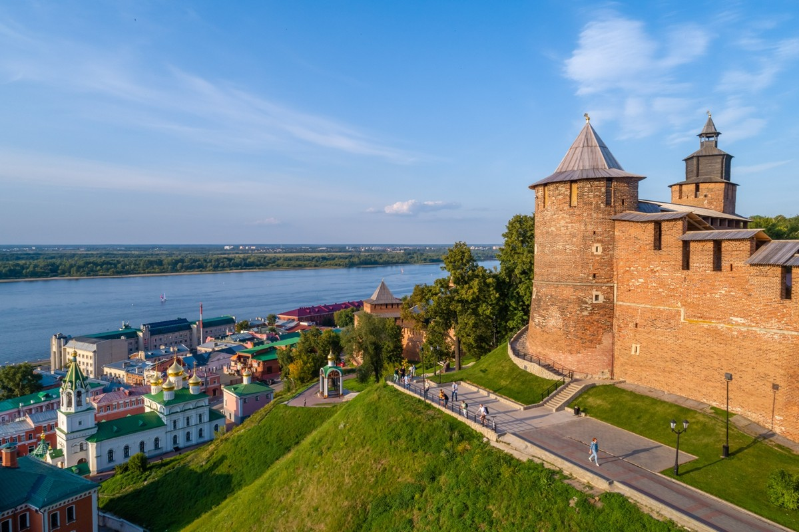
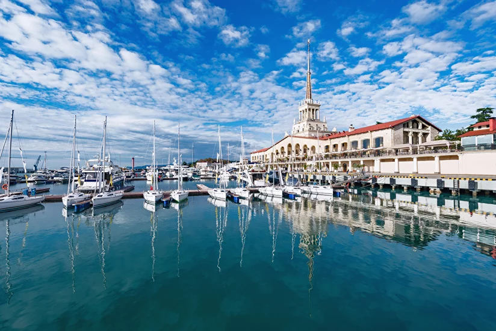
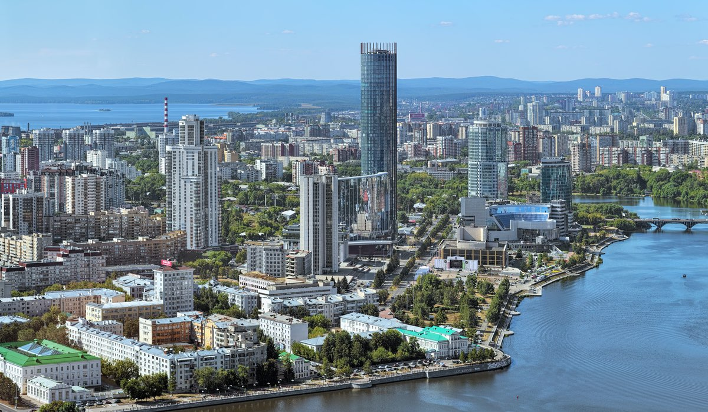
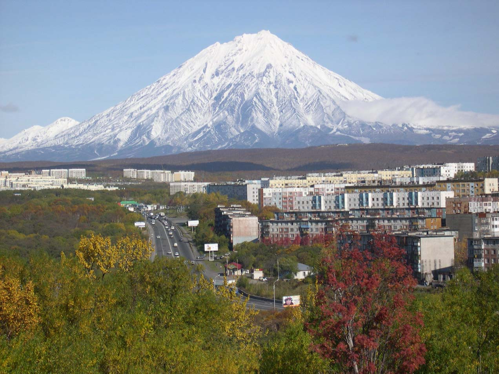

Направления

Запад России включает в себя европейскую часть страны, граничащую с несколькими государствами, такими как Украина, Беларусь, Латвия, Литва и Эстония.
Этот регион характеризуется разнообразной природой, включающей леса, реки и озера. Западная Россия имеет богатую историю, архитектурное наследие, включая Москва и Санкт-Петербург,
а также важные экономические и культурные центры. Здесь расположены ключевые транспортные маршруты и развита промышленность, сельское хозяйство и высокие технологии.
Регион также разнообразен этнически и культурно, с множеством народов и традиций.

Юг России охватывает теплые и разнообразные регионы, включая Кавказ, Сочи, Краснодарский край и Ростовскую область.
Этот регион известен своим мягким климатом, роскошными курортами на Черном и Азовском морях, а также богатыми природными ресурсами.
Юг характерен разнообразием ландшафта — от гор Кавказа до степей и лесостепей.
Экономика юга в значительной мере зависит от сельского хозяйства, туризма и добычи полезных ископаемых.
Регион также этнически разнообразен, с множеством культурных традиций и историей, связанной с народами Кавказа и казачьими обществами.

Это один из самых крупнейших и малонаселенных регионов мира, известный своими суровыми климатическими условиями, включая холодные зимы и короткие лета.
Сибирь богата природными ресурсами, такими как нефть, газ, уголь и полезные ископаемые, что делает её важным экономическим центром.
Регион включает тайгу, тундру, озера и реки, включая знаменитое озеро Байкал.
Сибирь исторически ассоциируется с каторжными работами и переселением,
но также богата культурным наследием коренных народов, таких как буряты и якуты, а также многонациональным составом населения.

Это удаленный и разнообразный регион, расположенный на востоке страны, в том числе включает в себя такие территории,
как Приморский край, Хабаровский край, Амурская область и Сахалин.
Климат варьируется от умеренного до субарктического, что влияет на экосистемы и сельское хозяйство.
Регион также известен своими полезными ископаемыми, особенно в добыче угля, золота и рыболовства.
Дальний Восток является домом для множества этнических групп и культур, и его население активно участвует в развитии культуры, науки и экономики.